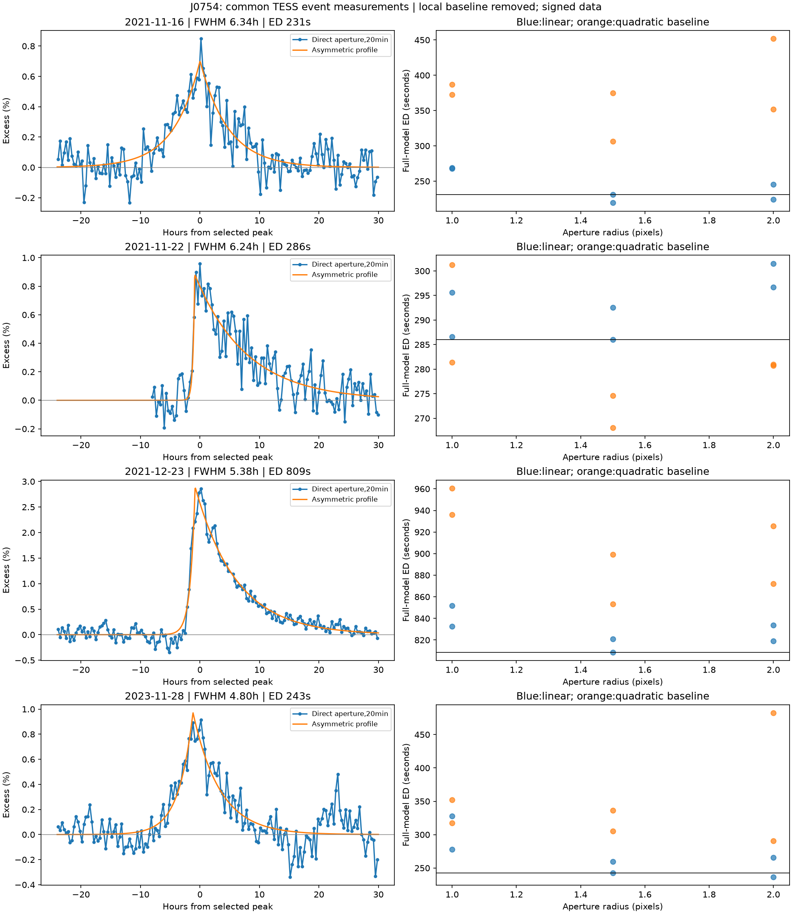
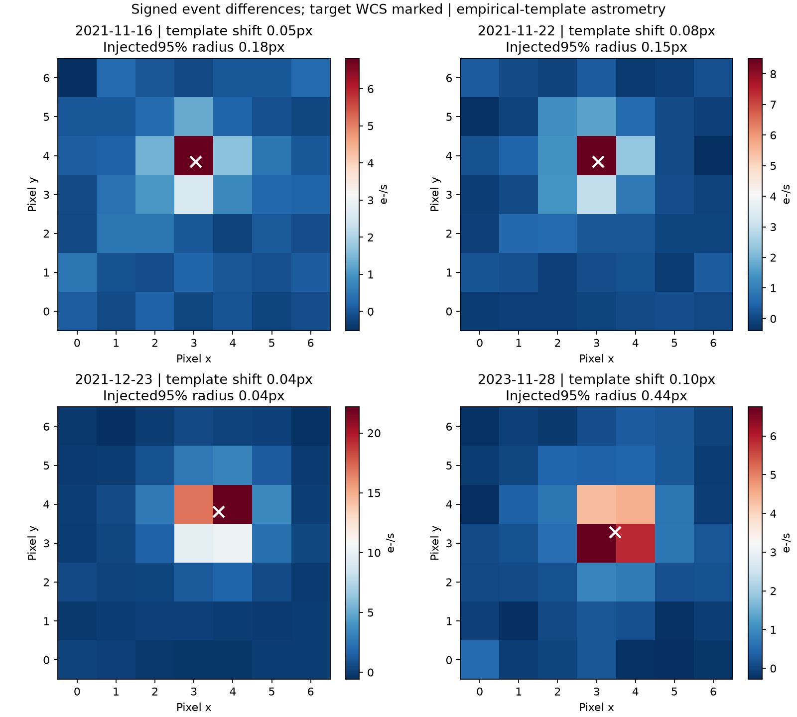

J0754: the evidence together
DASCH J075445.9+164141 / Gaia DR3 667401913089980544 / TIC 18878735
Updated 2026-11-11 · 36 evidence entries · 37 retained result families
J 0754 is a giant with reproducible multiyear fading, a recurring roughly 36-day photometric signal and evidence of magnetic activity. A near-synchronized active binary with evolving spots is the leading working explanation. The Gaia orbit remains a candidate; the data do not uniquely assign the flares/X-rays to a component or prove that spots cause the entire long fading.
This is a source-linked research ledger, not a peer-reviewed classification. It incorporates the four-event TESS comparison before consolidating the wider evidence. Earlier reports remain historical snapshots.
CSV table · Curated records · Dataset inventory · Four-event report
The four TESS excursions
Common model measurements. ED is equivalent duration: integrated relative excess, expressed as seconds of quiescent stellar output. The model includes tails not fully observed. Face-on patch energies use the shared 9000 K flare, 5206 K photosphere and 54.64 solar-luminosity assumptions; isotropic equivalents are four times larger.
| Date | Peak excess | Model FWHM | Model ED / baseline–aperture range | Nominal face-on energy |
|---|---|---|---|---|
| 2021-11-16 | 0.70% | 6.34 h | 231 s / 219–452 s | 2.04e+37 erg |
| 2021-11-22 | 0.88% | 6.24 h | 286 s / 268–302 s | 2.52e+37 erg |
| 2021-12-23 | 2.89% | 5.38 h | 809 s / 809–961 s | 7.13e+37 erg |
| 2023-11-28 | 0.97% | 4.80 h | 243 s / 237–483 s | 2.14e+37 erg |
The broad November 16 event and the 2023 event have substantial baseline sensitivity. November 22 and December 23 show unusual apparent hourly position changes under the matched-control test. Image-gradient terms do not remove their brightness excess, but stationary-source astrometry remains unresolved. The data do not separate a close binary component.
Evidence table
Status refers to the specific row. “Measured” does not certify its proposed physical explanation; “not recovered” does not imply universal absence. The lineage column prevents counting a new reduction or model fit as another instrument.
| Dataset / test | Finding | What it supports | Practical limit | Lineage / sources |
|---|---|---|---|---|
| E01 · DASCH, 1892-1989Historical brightnessmeasured | 552 retained differential detections; the 1930s event survives quality/control checks, with a photographic event/baseline contrast near +0.68 mag. | A real historical multiyear fade is supported. | Only three points sample 1892-1893; photographic and modern passbands differ. A nondetection is not zero flux. | DASCH plate exposures; control/reduction variants reuse them.Source 1 · Source 2 |
| E02 · APPLAUSE/Hamburg plates and orthogonal scansHistorical brightnessinconclusive | Catalogue photometry, native pixels, calibration controls and scanner orientations were checked without a dependable independent reproduction of the dimming. | The checks expose real calibration/scanner limitations. | Two scans of the same glass share one exposure. Natural photographic response and calibration controls remain material. | Separate archive from DASCH; x/y scans of one plate are not independent.Source 1 · Source 2 |
| E03 · Legacy ASAS, 2004-2009Historical brightnessmeasured | Same-frame ensemble correction gives about +0.147 mag fading 2004-2007 and -0.114 mag recovery by 2009; leaving out individual controls retains the fading. | An intermediate fading/recovery episode fills part of the historical gap. | Another episode does not establish a fixed period or identical eclipse geometry. | ASAS observations are distinct from ASAS-SN.Source 1 · Source 2 |
| E04 · ZTF g, 2018-2025Modern brightnessmeasured | 470 accepted target points and 364 same-exposure differential measurements; +0.3089 mag fading to 2022 and -0.1393 mag recovery to 2025. | Comparison-corrected modern optical fading and recovery. | The saved target data contain g only; no validated ZTF g-r curve was obtained. | ZTF exposures; rotation/color/model tests reuse them.Source 1 · Source 2 |
| E05 · ASAS-SN V/g, 2012-2026Modern brightnessmeasured | 5,249 rows retrieved;5,180 accepted V/g exposures. Separate g cameras give +0.285 to +0.313 mag fading 2018-2022 and support recovery continuing into 2026. | Independent optical replication of the modern fade. | Cameras/passbands retain separate zero points; no V at the 2022 minimum. Camera-days can share an observing night. | Independent of ZTF; repeat fits are not extra observations.Source 1 · Source 2 |
| E06 · NEOWISE W1/W2, through March 2024Modern brightnessmeasured | Comparison-corrected visit medians fade about +0.1163 mag in W1 and +0.0894 mag in W2, then partly recover. Matched 2018/2022 contrasts are +0.1175/+0.08875 mag. | The infrared dims less than optical g. | W1/W2 are bands of one instrument. Calibration, molecular absorption and visit matching matter. | WISE/NEOWISE is distinct from optical surveys; both bands share visits.Source 1 · Source 2 |
| E07 · Optical/IR trajectory and V/g overlapColorsmeasured | g-W1 reddens roughly 0.19-0.22 mag. The 2017/18 V/g rotation amplitudes agree within uncertainty; half-day cross-band matches cover only 30 distinct V dates. | Wavelength-dependent fading and a second-band rotation check. | No reliable temperature-specific V-g variation or hysteresis. Several mechanisms fit the same endpoint colors. | Derived from E04-E06, not an additional instrument.Source 1 |
| E08 · Seasonal ASAS-SN/ZTF searchesRotationmeasured | Allowing seasonal phase/amplitude evolution gives peaks near 35.78 days (ASAS-SN) and 36.30 days (ZTF). Annual aliases fit worse across most seasons. | A recurring roughly 36-day photometric clock compatible with rotation. | Peak widths are not formal period errors. A 71.84-day rotation with two active longitudes remains possible. Photometry is not an orbital RV measurement. | Two surveys, reusing E04/E05 for another feature.Source 1 · Source 2 |
| E09 · Amplitude/brightness and short-window testsRotationinconclusive | No simple seasonal amplitude-versus-brightness trend. Stronger early 2024/25 modulation is hidden by the weak season-long fit; later amplitude/phase changes differ. | Evolving surface patterns remain compatible with the clock. | Rotation amplitude measures asymmetry, not total spot area. No spot lifetime, differential rotation or simple activity-cycle law is measured. | Further analyses of E04/E05.Source 1 · Source 2 |
| E10 · 912.3-day catalogue period and fixed waveformsTiming modelsmodel-rejected | The 912.3-day waveform fails modern replay/forward tests. Holding one exact 35.92-day waveform fixed across years also worsens later predictions. | Neither stable waveform describes the modern observations. | This does not reject a recurring rotation timescale with evolving spots or establish a replacement long period. | Tests of models on the same optical observations.Source 1 · Source 2 |
| E11 · Decadal recurrence testsTiming modelsinconclusive | Episodes have unequal depths and incomplete coverage. Tested equal-depth repeats fail; a post-hoc approximately 15-year schedule has covered misses and large gaps. | Repeated multiyear fading, without an established regular cycle. | The 1930 s-to-2020s gap is not a measured 88-year orbit. An approximately 7.96-year historical gap remains unfilled. | Derived from E01/E03-E05.Source 1 |
| E12 · Gaia DR3 SB1 solutionCompanioncandidate | P=35.9205+/-0.0306 days, K1=10.72+/-0.81 km/s, 21 good velocities and eccentricity consistent with zero. The period approximately matches the optical clock. | A concrete close-companion candidate and plausible tidal-activity connection. | Efficiency/significance fall below recommended gold-sample thresholds. Epoch RVs were unavailable for refitting; binary classification/synchronization remain unconfirmed. | Gaia spectroscopy is independent of the optical light curves.Source 1 · Source 2 |
| E13 · Conditional orbit/tidal calculationsCompanionmodel-compatible | Reported SB1 parameters imply f (M)=0.0045872 solar masses. For a 1.5-solar-mass primary, example companions are 0.240/0.282/0.533 solar masses at inclinations 90/60/30 degrees. | A low-mass dynamically relevant companion and tidal maintenance of activity are physically compatible. | Mass, inclination, envelope properties and tidal prescription are assumptions, not an observed companion mass or proof of locking. | Theory applied to E12, not another detector.Source 1 · Source 2 |
| E14 · Gaia parameters and literature atmosphereStellar structureinconclusive | Gaia-based luminosity 54.64 solar luminosities and temperature~5206 K contrast with a literature~4500 K atmosphere/low poster gravity. Conditional radii near 9-12 solar radii contrast with a substantially larger low-gravity solution. | The object is treated as a giant; a consistent atmosphere/radius solution needs improvement. | No seismic radius or measured flare temperature. Tidal and energy calculations inherit the stellar-parameter uncertainty. | Catalogue/literature estimates; downstream calculations share them.Source 1 · Source 2 |
| E15 · Published Ca II H/K and FAST, 2008-2012Optical spectroscopymeasured | Tang et al. reported chromospheric Ca II H/K emission. Ten FAST spectra show weaker H-alpha absorption on 12 November 2009 than October 2008: 0.480+/-0.085 Angstrom formal-noise contrast. | Chromospheric activity; H-alpha variability compatible with core fill-in. | About 1.675% differential continuum bias can reproduce the H-alpha contrast. This is not a flare precursor or proof of a shared episode with Swift 20 days later. | FAST observations and published spectroscopy; repeated reductions reuse spectra.Source 1 · Source 2 |
| E16 · FAST blueshift and temperature indicesOptical spectroscopynot-recovered | No convincing detached blueshifted H-alpha absorption. Broad Mg/Na indices supply no precise temperature change. | No spectroscopic identification of erupting gas or measured cooling. | Sparse spectra/resolution do not exclude all mass loss or spots. Lack of blueshift is not a detection of obstruction. | Same FAST observations as E15.Source 1 · Source 2 |
| E17 · FAST relative RV testsOptical spectroscopyinconclusive | Synthetic 10 km/s shifts are recovered numerically, but same-night repeat shifts differ by 20-24 km/s and separate line windows disagree. Sky/telluric checks do not solve this. | Existing extracted spectra cannot independently test the candidate 10.72 km/s semi-amplitude. | Numerical shift recovery is not calibrated RV precision. The cleaner 2010 pair does not establish an orbit. | Same FAST spectra as E15/E16.Source 1 |
| E18 · Six calibrated pixel intervals; four excursionsTESS eventscandidate | Four positive compact excursions: 16/22 November 2021, 23 December 2021, 28 November 2023. Common model FWHM~6.34/6.24/5.38/4.80 hours; December 23 remains largest. | Repeated hour-scale brightening strengthens activity; November 22/December 23 have the clearest fast-rise/slow-decay shapes. | November 16 is nearly symmetric and less flare-specific. November 16/November 28 have large baseline envelopes. Selection was exploratory, not a blind false-alarm experiment. | One TESS instrument across separate dates. QLP/SPOC/custom apertures reuse photons.Source 1 · Source 2 · Source 3 |
| E19 · Common conditional energy estimatesTESS eventsmodel-compatible | Model ED 231/286/809/243 seconds; baseline/aperture envelopes 219-452/268-302/809-961/237-483 seconds. Nominal face-on patch energies 2.04e37/2.52e37/7.13e37/2.14e37 erg. | If stellar flares associated with this system, all are superflare-scale under the common assumptions. | Isotropic energies are four times face-on values. Luminosity, flare spectrum, geometry, dilution and component attribution are assumed. Radiation is not kinetic/magnetic energy; conditional bootstrap errors omit baseline systematics. | Models of E18, not an independent energy observation.Source 1 · Source 2 |
| E20 · Matched image injections/hourly positionsTESS eventsinconclusive | 80 matched controls/event calibrate template offsets. Apparent hourly drift is unusual for November 22/December 23. Pointing-gradient terms change mean flux amplitudes by<0.3% relative; hourly changes<0.9%. | The tested pointing terms do not remove the excess; pixel positions add information beyond an aperture curve. | Stationary astrometry is not established. December 23 is marginally outside its noise-only radius; November 28 is less precise. No official PRF/attitude or full moving-object exclusion; close components remain unresolved. | Same TESS pixels as E18. Controls match actual counts/timestamp patterns.Source 1 · Source 2 |
| E21 · Coverage/injection recoveryTESS eventsmeasured | Direct pixels retain 114.51 nominal cadence-days versus 104.18 days for the earlier light-curve union. New 1152 profile injections give effective search times 93.33/108.47/113.90/111.25 days. Earlier 1296 injections remain separate. | Sensitivity to representative shapes and gaps is quantified; original-sized sampled events are usually recoverable. | Quality rules explain the coverage difference; neither is live-time. Effective exposure is profile-specific. Four candidates do not establish a flare-frequency distribution or magnetic-cycle dependence. | Synthetic tests of E18 exposures, not new observations.Source 1 · Source 2 · Source 3 |
| E22 · Multiday eclipse search at 35.92 daysTESS other testsnot-recovered | No stable repeating eclipse. Tested 3%-deep 1-6 day profiles are recovered across selected injection phases; weaker limits depend on baseline/reduction. | Persistent deep eclipses of the tested shapes are disfavored. | Noneclipsing companions, dilution, grazing geometry and upstream attenuation remain possible. No universal depth upper limit. | Same TESS exposures, tested at longer timescales.Source 1 |
| E23 · Oscillation/power-spectrum checksTESS other testsnot-recovered | No reproducible localized oscillation envelope at 10-200 microHz. Retaining the December flare raises sector 46 power at 30-100 microHz by 1.88 (SAP)/3.04 (corrected). | Transient contamination matters; no usable seismic mass/radius. | The lower-gravity prediction near 6 microHz was outside the search. No intrinsically nonoscillating-star or binary classification follows. | Same TESS light curves; signal-removal variants are not independent.Source 1 |
| E24 · Swift XRT/2SXPS, 2 December 2009X-raysmeasured | 2SXPS J075445.6+164139: 18 counts/4183s, offset 3.88 arcsec inside 5.6 arcsec 90%radius. Conditional thermal-plasma conversion gives Lx~4.2e31 erg/s at 1668 pc. | An archival X-ray source associated with the position supports an active corona in the system. | Two useful snapshot bins do not resolve a flare (constancy p~.141). This is 12 years before the 2021 TESS event; a FAST visit 20 days earlier does not identify a shared episode. | Swift XRT is independent of TESS/eROSITA. UVOT is another detector on Swift.Source 1 · Source 2 |
| E25 · eROSITA DR2/official Gaia-NWAY counterpartX-rayscandidate | 3eRASS J075445.3+164136: 23.60+/-5.89 net counts; 0.2-2.3 keV catalogue flux~9.04e-14 erg/s/cm2. Exact Gaia 667401913089980544 selected: p_any=.918834, p_i=.99999994, match_flag 1. | Independent X-ray survey strongly favors association with J 0754 among Gaia candidates. | p_i is conditional within Gaia. A faint nearby UVOT object is outside that comparison. Catalogue-only DR2 cannot resolve a flare; DR1/DR2 overlap. Different Swift/eROSITA bands cannot directly establish flux variability. | Independent of Swift; DR1/DR2 are not two instruments or disjoint exposures.Source 1 · Source 2 |
| E26 · GALEX NUV photons/catalogue, 2 February 2006Ultravioletmeasured | NUV AB 18.614+/-0.053 match at 0.142 arcsec. Two short runs span 97/82 nominal seconds. Corrected background/flat/sensitivity/deadtime fluctuations remain weak and strongly bin dependent. | NUV emission is measured; no convincing new UV flare. | Coverage cannot characterize hours-long flares. No reliable FUV numerical limit or temperature/rotation-specific NUV excess is established by these timing tests. | GALEX is separate; its catalogue/photon reductions share exposures.Source 1 · Source 2 |
| E27 · Swift UVOT UVW 1, 2 December 2009Ultravioletinconclusive | First image crosses an exposure edge (central pixel~8.44 s); second has uniform 2390 scoverage. Their apparent count difference cannot be treated as variability. | A real exposure problem explains a misleading comparison. | No UVOT flare or calibrated two-snapshot variability. Coincidence loss, aperture correction and the cool-star optical red leak matter for absolute UV inference. | UVOT differs from XRT. These images are not extra TESS flare candidates.Source 1 |
| E28 · VLASS 3 GHz, 2019/2021/2024Radionot-recovered | No significant detection: forced flux-0.241+/-0.144,+0.108+/-0.146,-0.127+/-0.127 mJy. Approximate 3 sigma image bounds 0.432/0.545/0.382 mJy; no epoch change (p~.219). | Three radio visits supply image-level limits. | No radio flare or brightness-change detection. Sparse nondetections do not exclude fainter emission or bursts between visits. | One VLA instrument at three dates; Quick Look calibration/image-noise limits apply.Source 1 · Source 2 |
| E29 · SPHEREx 2025/2026 and Gaia XP mean spectrumInfrared spectrameasured | 223 SPHERExoverlaps yield 182 retained local measurements. Official/native extraction broadly agrees. A giant photosphere explains most flux; a~9%long-wave residual depends on model/calibration. | No dominant warm infrared emitter is required in the recovery-era spectra. | No SPHEREx spectrum of the 2022 minimum. Native/local reductions share pixels; XP averages epochs. Cold dust or a small excess remains possible. | SPHEREx/Gaia are separate; two SPHEREx reductions are not two observations.Source 1 · Source 2 |
| E30 · CO-window/composite-spectrum testsInfrared spectrainconclusive | Atmosphere-nuisance CO/reference ranges include unity. Giant-only spectra pass the exploratory 5%shape allowance; adding a second spectrum improves residuals but is not required. | No robust CO emission, dust emission feature or luminous secondary is identified. | Tolerance is not a confidence threshold. Similar-color components are normalization-degenerate; there is no useful general companion-light upper bound. | Models reusing E29, not additional spectral detections.Source 1 · Source 2 |
| E31 · Two-temperature spot modelMechanismsmodel-compatible | An illustrative 5000 Kphotosphere/~3650 Kspots changes projected coverage 30%to 49.6%; g/W1 fit predicts W2~0.0995 mag versus 0.08875 observed, inside the adopted 0.02 mag allowance. | Cool spots can reproduce the wavelength dependence and fit the activity picture. | Spot temperature/coverage are example solutions, not measured surface properties. Compatibility does not prove that spots cause the whole fade. | Theory applied to E04-E07, not independent confirmation.Source 1 · Source 2 |
| E32 · Dust screens/partial covering/mixturesMechanismsmodel-compatible | Tested ordinary uniform screens fail the optical/IR changes. Partial-covering/flatter-extinction families and some mixtures survive; the full trajectory does not decisively rank them. | Simple uniform attenuation is disfavored; nonuniform obscuration remains a comparison to spots. | Rejection of one screen is not rejection of all dust. Passing a tolerance is not a posterior probability or detection of a disk. | Competing models of the same data used in E31.Source 1 · Source 2 |
| E33 · Flare-ejected cloud budgetMechanismsinconclusive | Conditional opacity/geometry calculations explore material covering a giant for years. No cloud is measured, and no unique orbit/confinement mechanism is fitted. | A physical possibility was explored, not detected. | Opacity, mass, expansion and confinement are assumptions. The H-alpha check supplies no detached blueshifted cloud detection. | Illustrative theory using E14/E16, not an observed ejection.Source 1 · Source 2 |
| E34 · LAMOST/APOGEE/high-resolution CfA routesArchive limitsnot-recovered | LAMOST repeats a failed/SNR-zero 2018 visit. Public APOGEE DR17/DR19 target queries are empty. Tested Hectochelle/old-Echelle routes add no suitable spectrum; the high-resolution poster spectrum remains unrecovered. | No new calibrated high-resolution RV/activity spectrum through these routes. | Empty catalogues/restricted releases are bounded access results, not proof observations never existed. New high-resolution spectroscopy remains valuable. | Separate searches with no additional spectrum to count.Source 1 · Source 2 |
| E35 · XMM-Newton/ChandraArchive limitsnot-recovered | Tested 5 XMM/slew/CSCsource cones are empty. Nearby pointings do not establish useful target exposure. | No further source detection or useful target light curve recovered. | Catalogue/pointing results are not measured X-ray flux upper limits and cannot establish fading between missions. | Separate facilities with no positive target evidence to count.Source 1 |
| E36 · Pan-STARRS/PTF/other optical-history leadsArchive limitsinconclusive | Pan-STARRS data are dominated by saturation/other flags; reported mean colors are not validated. Other optical/history routes retain sparse/flagged/unrecovered products rather than a new trustworthy color curve. | No extra validated optical color history or newly filled historical gap claimed. | Sentinel/synthetic values cannot enter physical fits. Diagnostic candidates remain leads, not completed detections. | Distinct archives with insufficient usable data in completed checks.Source 1 · Source 2 |
What would change the picture
- Repeatable high-resolution velocities and line-shape/activity measurements across several 35.92-day cycles could test the companion and synchronization.
- Temperature-sensitive spectra plus simultaneous multicolor photometry at different brightness states could separate changing cool surface coverage from attenuation.
- An official-PRF/attitude and moving-source check could resolve the remaining TESS position diagnostics; new well-localized flares would help assign the emitting source.
Plots and measurement record


Rebuild with python -B tools/sky-plates/build_j0754_evidence_table.py. Input source hashes and validation are retained beside this table. No telescope inputs were modified and no message was sent to an astronomer.